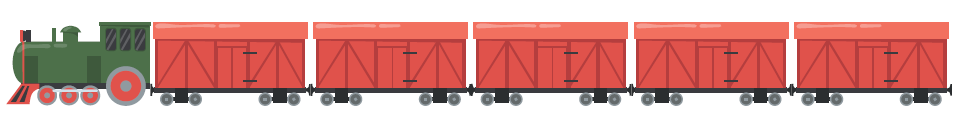

# Store the value 2 under the name x
x <- 2
# Typing the name on its own prints the value
x[1] 2Statistical Methods with R
Unit A · Chapter 02 · Lecture 02b
Developed by Jeffrey M. Girard
Assignment
Naming
Functions
Vectors
office <- 7858640841
a-Z0-9_.age ≠ Age)out <- f(in1, in2)
output <- function_name(input)
output <- function_name(argument, argument_name = argument_value)

v <- c(1, 2, 3)
vector_name <- c(element1, element2, element3)